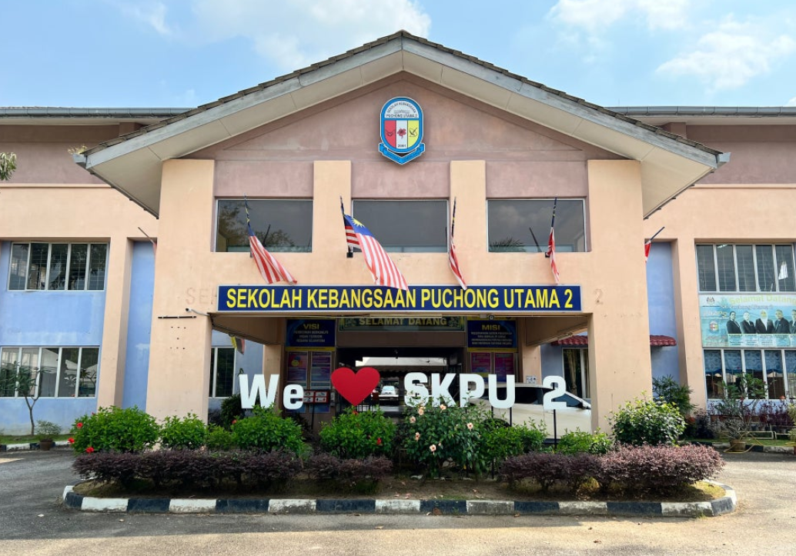
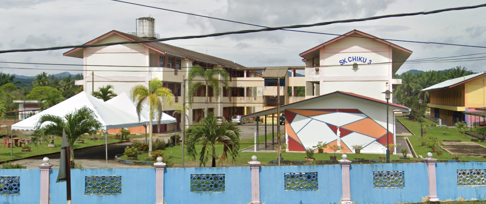
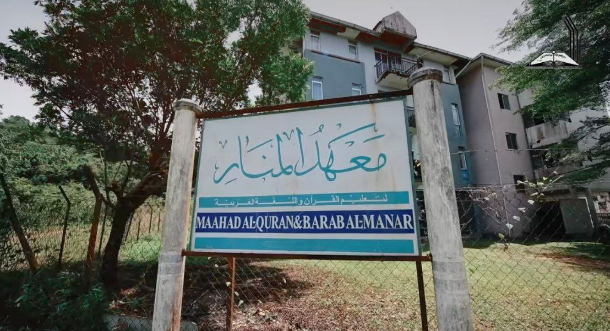

Education has always been a cornerstone of my personal and professional growth for my future self. Each step in my academic journey has been filled with valuable lessons and alot of new experiences has shaped me into the person I am today, curious, driven and even passionate about learning new things.
There were times when i struggled to achieve my own goals, but those moments taught me the importance of perseverance and adaptability. I learned that growth often happens outside of our comfort zones, the times where I find myself struggled is actually the moments i discover my true potential.
Feel free to explore the details of my educational journey and place that have brought me to where i am today. I hope it provides you with a better understanding of my academic foundation and the path I have taken so far.
|  |  |  | |
| Sekolah Kebangsaan Puchong Utama 2 | Sekolah Kebangsaan Chiku 3 | Mahaad Tahfiz Al Quran dan Bahasa Arab Almanar | Universiti Teknologi Mara, Machang Campus |